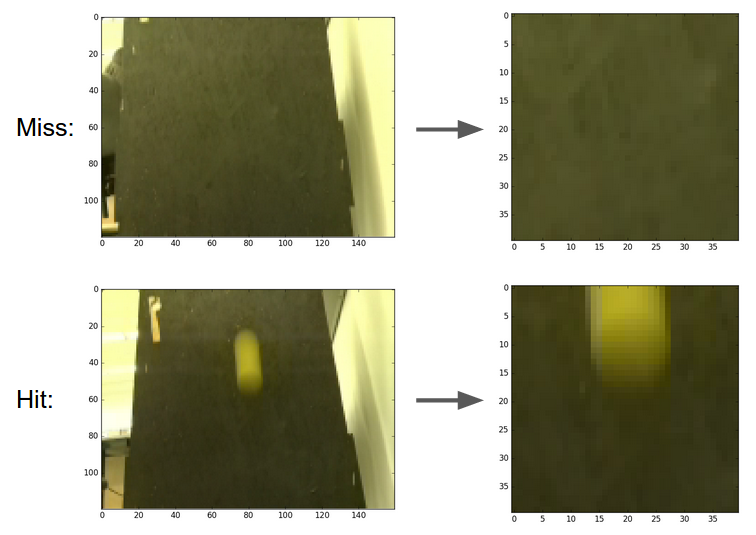

Software System
The software architecture is heavily inspired both by Brad A. Minch's state machine format and Facebook's React composable and nestable component architecture. The combination of the two influences gave us an easy-to-reason-about system with simple components that mirror physical parts of our system. This allowed for easier debugging and easy separation of tasks among team members. We overcame the namespacing issues of C by giving each state machine a respective component struct which housed all of that machine's state variables.
State Machines

This is an overview of each of our state machines and their enter and exit transitions. To be explicit, the baller state machine is the "parent" of both launcher state machines and directly triggers their state transitions
Computer Vision
To detect if a ball is hit, we use a Raspberry Pi with camera module. We take a 160x120 pixel image over 20 times per second, crop it down to the middle 40x40 pixels, and check the average color value to decide if there is a ball in front of the camera or not. The Raspberry Pi is doing this constantly and outputting a high or low on a GPIO pin to signal to the PIC what it sees. The PIC checks this pin when the gun is in the "shoot" state and records a hit or miss depending on the reading.
Audio
We added audio to our game using the Raspberry Pi already in the system. The PIC and Raspberry Pi are connected by a USB cable, with the PIC acting as the peripheral. When the game code wants to play a sound, the PIC raises a digital pin high that is connected to the Raspberry Pi's GPIO header. This signals the Raspberry Pi to start a USB transaction. Unfortunately, the peripheral (the PIC) cannot initialize the transaction, which is why we need the signal line. The Raspberry Pi determines which sound to play based on the USB response from the PIC, and then plays it using pygame.
Full Code
The entirety of our code can be found on our GitHub repository.